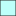

<!doctype html>
<html lang="en">
    <head>
        <meta charset="utf-8">
        <meta http-equiv="X-UA-Compatible" content="IE=edge">
        <meta name="viewport" content="initial-scale=1,user-scalable=no,maximum-scale=1,width=device-width">
        <meta name="mobile-web-app-capable" content="yes">
        <meta name="apple-mobile-web-app-capable" content="yes">
        <link rel="stylesheet" href="css/leaflet.css">
        <link rel="stylesheet" href="css/qgis2web.css"><link rel="stylesheet" href="css/fontawesome-all.min.css">
        <link rel="stylesheet" href="css/leaflet-control-geocoder.Geocoder.css">
        <style>
        html, body, #map {
            width: 100%;
            height: 100%;
            padding: 0;
            margin: 0;
        }
        </style>
        <title>Supervisión de Jima, Enero 2024</title>
    </head>
    <body>
        <div id="map">
        </div>
        <script src="js/qgis2web_expressions.js"></script>
        <script src="js/leaflet.js"></script>
        <script src="js/leaflet.rotatedMarker.js"></script>
        <script src="js/leaflet.pattern.js"></script>
        <script src="js/leaflet-hash.js"></script>
        <script src="js/Autolinker.min.js"></script>
        <script src="js/rbush.min.js"></script>
        <script src="js/labelgun.min.js"></script>
        <script src="js/labels.js"></script>
        <script src="js/leaflet-control-geocoder.Geocoder.js"></script>
        <script src="data/Estados_1.js"></script>
        <script src="data/BrixpromedioEnero2024_2.js"></script>
        <script src="data/PesopromedioEnero2024_3.js"></script>
        <script>
        var map = L.map('map', {
            zoomControl:true, maxZoom:28, minZoom:1
        }).fitBounds([[18.58578991286022,-106.06957332924587],[22.601382676036998,-97.8199229116314]]);
        var hash = new L.Hash(map);
        map.attributionControl.setPrefix('<a href="https://github.com/tomchadwin/qgis2web" target="_blank">qgis2web</a> &middot; <a href="https://leafletjs.com" title="A JS library for interactive maps">Leaflet</a> &middot; <a href="https://qgis.org">QGIS</a>');
        var autolinker = new Autolinker({truncate: {length: 30, location: 'smart'}});
        var bounds_group = new L.featureGroup([]);
        function setBounds() {
        }
        map.createPane('pane_Positronnolabelsretina_0');
        map.getPane('pane_Positronnolabelsretina_0').style.zIndex = 400;
        var layer_Positronnolabelsretina_0 = L.tileLayer('https://a.basemaps.cartocdn.com/light_nolabels/{z}/{x}/{y}@2x.png', {
            pane: 'pane_Positronnolabelsretina_0',
            opacity: 1.0,
            attribution: '<a href="https://cartodb.com/basemaps/">Map tiles by CartoDB, under CC BY 3.0. Data by OpenStreetMap, under ODbL.</a>',
            minZoom: 1,
            maxZoom: 28,
            minNativeZoom: 0,
            maxNativeZoom: 20
        });
        layer_Positronnolabelsretina_0;
        map.addLayer(layer_Positronnolabelsretina_0);
        function pop_Estados_1(feature, layer) {
            var popupContent = '<table>\
                    <tr>\
                        <td colspan="2">' + (feature.properties['ENTIDAD'] !== null ? autolinker.link(feature.properties['ENTIDAD'].toLocaleString()) : '') + '</td>\
                    </tr>\
                </table>';
            layer.bindPopup(popupContent, {maxHeight: 400});
        }

        function style_Estados_1_0() {
            return {
                pane: 'pane_Estados_1',
                opacity: 1,
                color: 'rgba(169,169,169,1.0)',
                dashArray: '',
                lineCap: 'butt',
                lineJoin: 'miter',
                weight: 1.0, 
                fill: true,
                fillOpacity: 1,
                fillColor: 'rgba(183,72,75,0.0)',
                interactive: true,
            }
        }
        map.createPane('pane_Estados_1');
        map.getPane('pane_Estados_1').style.zIndex = 401;
        map.getPane('pane_Estados_1').style['mix-blend-mode'] = 'normal';
        var layer_Estados_1 = new L.geoJson(json_Estados_1, {
            attribution: '',
            interactive: true,
            dataVar: 'json_Estados_1',
            layerName: 'layer_Estados_1',
            pane: 'pane_Estados_1',
            onEachFeature: pop_Estados_1,
            style: style_Estados_1_0,
        });
        bounds_group.addLayer(layer_Estados_1);
        map.addLayer(layer_Estados_1);
        function pop_BrixpromedioEnero2024_2(feature, layer) {
            var popupContent = '<table>\
                    <tr>\
                        <th scope="row">Estado</th>\
                        <td>' + (feature.properties['NOM_ENT'] !== null ? autolinker.link(feature.properties['NOM_ENT'].toLocaleString()) : '') + '</td>\
                    </tr>\
                    <tr>\
                        <th scope="row">Municipio</th>\
                        <td>' + (feature.properties['NOM_MUN'] !== null ? autolinker.link(feature.properties['NOM_MUN'].toLocaleString()) : '') + '</td>\
                    </tr>\
                    <tr>\
                        <th scope="row">Zona DOT</th>\
                        <td>' + (feature.properties['Zona'] !== null ? autolinker.link(feature.properties['Zona'].toLocaleString()) : '') + '</td>\
                    </tr>\
                    <tr>\
                        <th scope="row">°Brix promedio</th>\
                        <td>' + (feature.properties['Brix Prom'] !== null ? autolinker.link(feature.properties['Brix Prom'].toLocaleString()) : '') + '</td>\
                    </tr>\
                </table>';
            layer.bindPopup(popupContent, {maxHeight: 400});
        }

        function style_BrixpromedioEnero2024_2_0(feature) {
            if (feature.properties['Brix Prom'] >= 34.440000 && feature.properties['Brix Prom'] <= 35.000000 ) {
                return {
                pane: 'pane_BrixpromedioEnero2024_2',
                opacity: 1,
                color: 'rgba(35,35,35,1.0)',
                dashArray: '',
                lineCap: 'butt',
                lineJoin: 'miter',
                weight: 1.0, 
                fill: true,
                fillOpacity: 1,
                fillColor: 'rgba(189,255,250,1.0)',
                interactive: true,
            }
            }
            if (feature.properties['Brix Prom'] >= 35.000000 && feature.properties['Brix Prom'] <= 36.300000 ) {
                return {
                pane: 'pane_BrixpromedioEnero2024_2',
                opacity: 1,
                color: 'rgba(35,35,35,1.0)',
                dashArray: '',
                lineCap: 'butt',
                lineJoin: 'miter',
                weight: 1.0, 
                fill: true,
                fillOpacity: 1,
                fillColor: 'rgba(144,231,227,1.0)',
                interactive: true,
            }
            }
            if (feature.properties['Brix Prom'] >= 36.300000 && feature.properties['Brix Prom'] <= 37.600000 ) {
                return {
                pane: 'pane_BrixpromedioEnero2024_2',
                opacity: 1,
                color: 'rgba(35,35,35,1.0)',
                dashArray: '',
                lineCap: 'butt',
                lineJoin: 'miter',
                weight: 1.0, 
                fill: true,
                fillOpacity: 1,
                fillColor: 'rgba(99,207,204,1.0)',
                interactive: true,
            }
            }
        }
        map.createPane('pane_BrixpromedioEnero2024_2');
        map.getPane('pane_BrixpromedioEnero2024_2').style.zIndex = 402;
        map.getPane('pane_BrixpromedioEnero2024_2').style['mix-blend-mode'] = 'normal';
        var layer_BrixpromedioEnero2024_2 = new L.geoJson(json_BrixpromedioEnero2024_2, {
            attribution: '',
            interactive: true,
            dataVar: 'json_BrixpromedioEnero2024_2',
            layerName: 'layer_BrixpromedioEnero2024_2',
            pane: 'pane_BrixpromedioEnero2024_2',
            onEachFeature: pop_BrixpromedioEnero2024_2,
            style: style_BrixpromedioEnero2024_2_0,
        });
        bounds_group.addLayer(layer_BrixpromedioEnero2024_2);
        map.addLayer(layer_BrixpromedioEnero2024_2);
        function pop_PesopromedioEnero2024_3(feature, layer) {
            var popupContent = '<table>\
                    <tr>\
                        <th scope="row">Estado</th>\
                        <td>' + (feature.properties['NOM_ENT'] !== null ? autolinker.link(feature.properties['NOM_ENT'].toLocaleString()) : '') + '</td>\
                    </tr>\
                    <tr>\
                        <th scope="row">Municipio</th>\
                        <td>' + (feature.properties['NOM_MUN'] !== null ? autolinker.link(feature.properties['NOM_MUN'].toLocaleString()) : '') + '</td>\
                    </tr>\
                    <tr>\
                        <th scope="row">Zona DOT</th>\
                        <td>' + (feature.properties['Zona'] !== null ? autolinker.link(feature.properties['Zona'].toLocaleString()) : '') + '</td>\
                    </tr>\
                    <tr>\
                        <th scope="row">Peso promedio</th>\
                        <td>' + (feature.properties['Peso Prom'] !== null ? autolinker.link(feature.properties['Peso Prom'].toLocaleString()) : '') + '</td>\
                    </tr>\
                </table>';
            layer.bindPopup(popupContent, {maxHeight: 400});
        }

        function style_PesopromedioEnero2024_3_0(feature) {
            if (feature.properties['Peso Prom'] >= 29.000000 && feature.properties['Peso Prom'] <= 35.000000 ) {
                return {
                pane: 'pane_PesopromedioEnero2024_3',
                opacity: 1,
                color: 'rgba(35,35,35,1.0)',
                dashArray: '',
                lineCap: 'butt',
                lineJoin: 'miter',
                weight: 1.0, 
                fill: true,
                fillOpacity: 1,
                fillColor: 'rgba(120,198,121,1.0)',
                interactive: true,
            }
            }
            if (feature.properties['Peso Prom'] >= 35.000000 && feature.properties['Peso Prom'] <= 39.000000 ) {
                return {
                pane: 'pane_PesopromedioEnero2024_3',
                opacity: 1,
                color: 'rgba(35,35,35,1.0)',
                dashArray: '',
                lineCap: 'butt',
                lineJoin: 'miter',
                weight: 1.0, 
                fill: true,
                fillOpacity: 1,
                fillColor: 'rgba(49,163,84,1.0)',
                interactive: true,
            }
            }
            if (feature.properties['Peso Prom'] >= 39.000000 && feature.properties['Peso Prom'] <= 40.000000 ) {
                return {
                pane: 'pane_PesopromedioEnero2024_3',
                opacity: 1,
                color: 'rgba(35,35,35,1.0)',
                dashArray: '',
                lineCap: 'butt',
                lineJoin: 'miter',
                weight: 1.0, 
                fill: true,
                fillOpacity: 1,
                fillColor: 'rgba(0,104,55,1.0)',
                interactive: true,
            }
            }
        }
        map.createPane('pane_PesopromedioEnero2024_3');
        map.getPane('pane_PesopromedioEnero2024_3').style.zIndex = 403;
        map.getPane('pane_PesopromedioEnero2024_3').style['mix-blend-mode'] = 'normal';
        var layer_PesopromedioEnero2024_3 = new L.geoJson(json_PesopromedioEnero2024_3, {
            attribution: '',
            interactive: true,
            dataVar: 'json_PesopromedioEnero2024_3',
            layerName: 'layer_PesopromedioEnero2024_3',
            pane: 'pane_PesopromedioEnero2024_3',
            onEachFeature: pop_PesopromedioEnero2024_3,
            style: style_PesopromedioEnero2024_3_0,
        });
        bounds_group.addLayer(layer_PesopromedioEnero2024_3);
        map.addLayer(layer_PesopromedioEnero2024_3);
            var title = new L.Control();
            title.onAdd = function (map) {
                this._div = L.DomUtil.create('div', 'info');
                this.update();
                return this._div;
            };
            title.update = function () {
                this._div.innerHTML = '<h2>Supervisión de Jima, Enero 2024</h2>';
            };
            title.addTo(map);
            var abstract = new L.Control({'position':'bottomleft'});
            abstract.onAdd = function (map) {
                this._div = L.DomUtil.create('div',
                'leaflet-control abstract');
                this._div.id = 'abstract'

                    abstract.show();
                    return this._div;
                };
                abstract.show = function () {
                    this._div.classList.remove("abstract");
                    this._div.classList.add("abstractUncollapsed");
                    this._div.innerHTML = 'Este mapa web es generado para visualizar de manera práctica el promedio general de peso y grados brix del agave supervisado en el mes de enero del 2024 por AgroMetrika.';
            };
            abstract.addTo(map);
        var osmGeocoder = new L.Control.Geocoder({
            collapsed: true,
            position: 'topleft',
            text: 'Search',
            title: 'Testing'
        }).addTo(map);
        document.getElementsByClassName('leaflet-control-geocoder-icon')[0]
        .className += ' fa fa-search';
        document.getElementsByClassName('leaflet-control-geocoder-icon')[0]
        .title += 'Search for a place';
        var baseMaps = {};
        L.control.layers(baseMaps,{'Peso promedio, Enero 2024<br /><table><tr><td style="text-align: center;"></td><td>29 - 35</td></tr><tr><td style="text-align: center;"></td><td>35 - 39</td></tr><tr><td style="text-align: center;"></td><td>39 - 40</td></tr></table>': layer_PesopromedioEnero2024_3,'°Brix promedio, Enero 2024<br /><table><tr><td style="text-align: center;"></td><td>34.44 - 35</td></tr><tr><td style="text-align: center;"></td><td>35 - 36.3</td></tr><tr><td style="text-align: center;"></td><td>36.3 - 37.6</td></tr></table>': layer_BrixpromedioEnero2024_2,' Estados': layer_Estados_1,"Positron [no labels] (retina)": layer_Positronnolabelsretina_0,},{collapsed:false}).addTo(map);
        setBounds();
        var i = 0;
        layer_Estados_1.eachLayer(function(layer) {
            var context = {
                feature: layer.feature,
                variables: {}
            };
            layer.bindTooltip((layer.feature.properties['ENTIDAD'] !== null?String('<div style="color: #000000; font-size: 6pt; font-weight: bold; font-family: \'Century Gothic\', sans-serif;">' + layer.feature.properties['ENTIDAD']) + '</div>':''), {permanent: true, offset: [-0, -16], className: 'css_Estados_1'});
            labels.push(layer);
            totalMarkers += 1;
              layer.added = true;
              addLabel(layer, i);
              i++;
        });
        resetLabels([layer_Estados_1]);
        map.on("zoomend", function(){
            resetLabels([layer_Estados_1]);
        });
        map.on("layeradd", function(){
            resetLabels([layer_Estados_1]);
        });
        map.on("layerremove", function(){
            resetLabels([layer_Estados_1]);
        });
        </script>
    </body>
</html>
